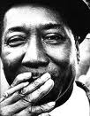
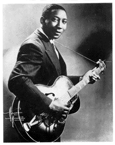
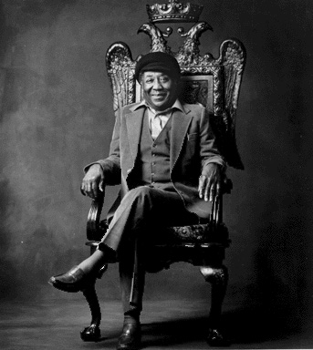

Книга Robert Palmer "Deep Blues" - одна из центральных работ в блюзовой истории. Она содержит квалифицированный анализ, точные факты и прекрасно переданные личные эмоции автора. В книге несколько "вступительных эпизодов". Один из них - о беседах с Мадди Уотерсом в 1978-м году.

35 лет спустя после путешествия на поезде Illinois Central до Чикаго, Мадди Уотерс сидел на кухне своего белого двухэтажного каркасного дома в тенистом пригороде в часе езды от центра Чикаго (Loop). Дом ни по каким меркам не был шикарным, но по сравнению с каморками, в которых проживали полтора миллиона черных чикагцев, он был просто грандиозным. В гостиной пушистый ковер и современная мебель, наверху несколько уютных спален. Просторная кухня, современная, вся электрическая; кухонный стол у двери, прикрытой сеткой от насекомых, - любимое место для разговоров, как любой кухонный стол в Дельте. Правда, тот весенний полдень и запахом, шумом, и всеми ощущениями был как в Миссиссиппи. Внуки Мадди и несколько соседских ребятишек вбегали через дверь, кружили вокруг стола, и с криками и гиканьем снова выбегали на двор. Его подручный по имени Бо, который вырос вместе с ним на плантации Стоуэллов, в углу комнаты поджаривал креветки.Жена Мадди (не женщина, с которой он сбежал в Сент-Луис, а позже забрал с собой в Чикаго: "ладить с ними никак не возможно") умерла уже несколько лет назад. Но неуловимые признаки женского присутствия чувствовались повсюду. Мадди ухаживал; в 1979, в возрасте 64 лет он возьмет отгул с работы в турне рок-звезды Эрика Клэптона, что жениться на 25-летней Марве Джин Брукс.
Приметы деревенских корней Мадди и его городских триумфов наполняют весь дом. Снаружи, в саду, который начинался от самых дверей и тянулся вдоль бетонной дорожки до дороги. Он держал собственные грядки помидоров, красных и зеленых острых перцев, окры, капусты и зеленой репы. Внутри дома, в маленькой передней у входа в его логово, в скромных рамках висели портреты двух выдающихся солистов на губной гармонике, которые играли в его группе и внесли свой вклад в формирование современного электрического блюза в 50-х: Литл Уолтер и Джеймс Коттон. Немного граммофонных пластинок, а его гитары, включая несколько дорогих подарков от состоятельных белых почитателей, были убраны под замок - недавно по соседству случилось несколько краж.
Мадди налил себе бокал шампанского Piper Heidseck (французское шампанское, вообще-то: Piper-Heidsieck) и отпихнул бутылку. Его доктор запретил ему пить крепкие напитки, объяснил он, вот что теперь ему приходится пить. Он выглядел на свои 63 года, но еще он выглядел энергичным, и все, что он делал, от того, как он поднял бокал шампанского, до того, как он ласково, но твердо шуганул детишек, впечатляло импозантностью и несомненной уверенностью. Взгляд глаз под тяжелыми веками, легкая улыбка, четкие фразы глубоким, раскатистым голосом - он до последнего дюйма был тем самым Мадди Уотерсом, который спел "Я Хучи-Кучи Мэн, все знают, я таков!"
Блюз был не особенно популярен в 1978 году, но карьера Мадди была на подъеме. Он выиграл столько премий Грэмми, ежегодной присуждаемой Национальной академий искусства звукозаписи и науки, что соперники шептали, что категория "Лучшая этническая иили традиционная запись" была придумана специально для него. Он появлялся в кино, исполнил колдовской "Mannish Boy" в фильме "Прощальный вальс" Мартина Скорсезе. Его альбомы выходили на лейбле Blue Sky, и с большой симпатией продюсировал рок-гитарист Джонни Уинтер, а дистрибуцией занималась Columbia - и они расходились большими тиражами, чем все его предыдущие пластинки. Он выступал настолько часто, насколько ему это хотелось (что значит, почти постоянно) и требовал все более растущих гонораров. Иногда он выступал в ночных клубах, но часто был звездой программы в театрах, или открывал концерты рок-звезд на стадионах и спортивных площадках. Но он отлично помнил, как приехал в Чикаго в возрасте 28 лет - для него это было едва ли не главным событием в жизни.
Ветка Illinois Central прорубается сквозь сердцевину Юной окраины, где в 1943 проживало большинство черных Чикаго, и большинство из них проживает там и поныне. На первый взгляд пассажирам могло показаться, что город на многие мили состоит из видавших виды двух-трех-этажных панельных и кирпичных домов с полуразрушенными полисадниками, подходившими прямо к рельсам. Они безмолвно тянулись за окнами поезда более часа, и только потом мерный стук рельсов замедлялся, и поезд въезжал в Центральный вокзал.
На вокзале было шумно и многолюдно, из вагонов выходили черные южане, кричали носильщики. И беспокойно переговаривались встречающие родственники- так это было воскресным утром, когда прибыл Мадди. "Господи, ты бы меня видел," - смеясь, он обратился в Бо. Тот моментально повернулся от печки, продемонстрировав широкую грудь в майке салатного цвета с надписью "Спасите китов". "Когда я сошел с поезда и оглянулся кругом - мне показалось, что это самое шустрое место в мире: в такси с лязгом падали флажки "занято", гудели гудки, люди шагали так быстро! Потом пытаешься сесть в такси, и он с шумом газует и везет так быстро, и все эти огромные дома… Я велел ему остановиться и не отпускал, пока не увидел, что моя сестра и ее муж Дэн живут в этом доме. Все дома на Южной окраине были на одно лицо. Так что он посмотрел на дверь, и он сказал: "Да, они живут здесь, но на четвертом этаже, а звонка нет. Так что я поднялся и постучал, и они спросили: "Ты как здесь оказался?", тогда только я вернулся, заплатил таксисту и забрал свой багаж".
"Это было во время войны, комнат внаем не было, вообще ничего не было. Люди приезжали - много людей. Но я переломил свое невезение, когда я приехал сюда. Я жил у Дэна и его жены и спал на стальной койке примерно неделю, а потом кто-то на втором этаже освободил помещение, и так я быстро добыл себе комнату. Работы было навалом повсюду. На упаковочной фабрике я получил работу сразу по приезду, а недели за две-три я разыскал своих кузенов, они и забрали меня на Западную окраину. Я прожил у них месяца два-три, а потом нашел себе четырехкомнатную квартиру. Все для меня само складывалось как нельзя лучше, чувак".

Вскоре после того, как он устроился, Мадди начал в минуты отдыха играть блюз для своих друзей, а за этим началась работа на вечеринках - за небольшие чаевые и все то виски, сколько он мог выпить. "Знаеь, - сказал он, освежая шампанское в бокале, - Я хотел уехать в Чикаго еще в конце 30-х… Потому что Роберт Найтхоук зашел ко мне и сказал, что едет туда записывать пластинку. Он сказал, давай вместе, можешь присоединяться. А я подумал, нет, чувак, этот пижон просто гонит, не поедет он на самом деле в Чикаго. Я считал, что уехать в Чикаго, это, вроде, как вообще покинуть этот мир. Наконец, он ушел, а в следующий раз, когда я про него услышал, это когда у него уже вышла пластинка. Так что я начал расспрашивать своих друзей, которые были в Чикаго, могу я там со своей гитарой чего-то добиться? "Не-а, там такое не слушают, эти твои старые блюзы, какие ты поешь, никто там такого не слушает, только не в Чикаго!" так что когда я наконец перебрался в Чикаго, тот же человек, который мне это говорил", - Мадди бросил взгляд на Бо.- "Жена Дэна, моя сестра, она и была тем человеком, для которогоя начал играть каждую субботу, на "арендованных" вечеринках в ее квартире. Люди очень забавны". Он крякнул, пряча иронию. "Так я начал играть на таких "арендованных" вечерах, а потом повстречал Блю Смитти и Джимми Роджерса, и мы начали что-то мутить вместе. Мы стали играть на Западной окраине, в маленьких барах по соседству, по пять вечеров в неделю, по пять долларов за вечер. Деньги были небольшие, но мы работали".Точно, они работали… Они создавали современный блюз, возводили основу для рок-н-ролла.
…
Сидя в гостях у Мадди, я спросил, не жалеет ли он, что этот материальный достаток и признание его творчества пришли к нему так поздно в его жизни. Мадди бросил на меня ироничный взгляд, помолчал секунду и сказал: "Поздно? Я вообще-то и не думал, что все это когда-нибудь наступит".

Другие материалы о Мадди Уотерсе на Blues.Ru.